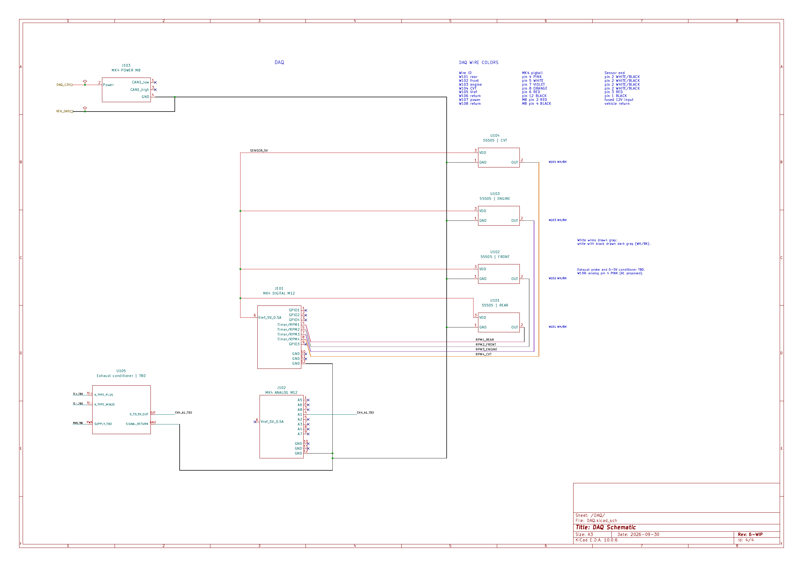
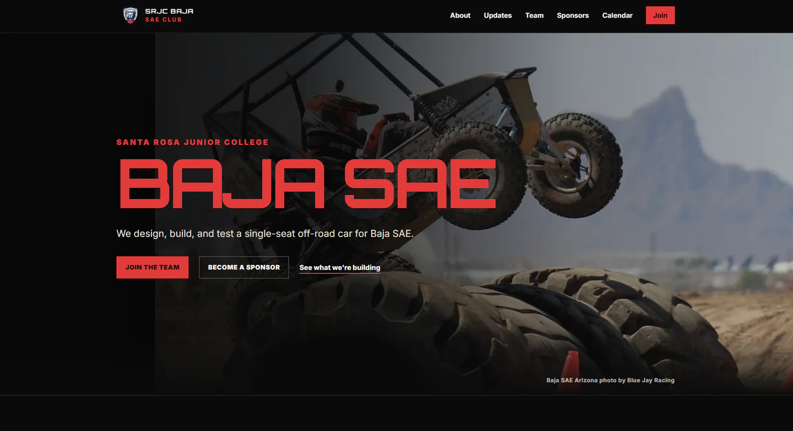

Earlier in the project, most of my Baja work was whole-car planning, sensor and data-logging research, manufacturing training, and team organization. The work is now more concrete: electrical schematics, DAQ hardware, physical interfaces, test fixtures, and validation planning. I still support the team systems I built, but electrical integration and test are the main technical focus.
SRJC Baja SAE | Engineering Integration Specialist
Baja SAE
My work: Electrical integration and test, KiCad schematics, RaceCapture bring-up, Canvas, public website
Current state: Rev 6 electrical package is WIP; initial DAQ bench checks complete; vehicle validation still ahead
Project context: SRJC is building its first competition vehicle for Baja SAE Arizona 2027
My role sits across subteams rather than owning every electrical subsystem. I focus on getting sensing, power, safety interfaces, and test work to line up with the mechanical systems they depend on, while keeping the team's member-facing systems and technical organization usable.
Overview
Electrical & DAQ
I drew the Rev 6-WIP electrical overview, power, and safety sheets in KiCad, and share the DAQ sheet with Heyman Luong. The package defines the vehicle's 12 V branches, required kill, brake, and reverse circuits, RaceCapture/Pro MK4 power, and four planned Hall-effect RPM channels for front wheel, rear wheel, engine, and CVT-secondary speed. Hardware, fuse ratings, harness details, and several mechanical interfaces are still open.
The DAQ plan uses the MK4's four Timer/RPM inputs for rear wheel, front wheel, engine, and CVT-secondary speed. The sensors share the logger's 5 V reference and sensor return, while the MK4 itself is powered from the protected 12 V vehicle system. The drawing also keeps the planned exhaust-temperature channel separate because the final sensor and conditioner are not selected yet.


Bench testing
When the RaceCapture/Pro MK4 arrived, I updated it from firmware 2.22.0 to 2.24.0, confirmed the USB connection and live dashboard, checked the onboard IMU and outdoor GNSS, measured the sensor reference at about 4.69 V on USB power, and spot-checked Analog 1-4 and Digital/GPIO 1 through the two M12 pigtails. That was a receiving and bench sanity check, not full system validation.
Important result: The 4.69 V USB-powered reference is slightly below the Littelfuse 55505 sensor's 4.75 V minimum, so USB-only testing does not count as final sensor-power validation.
Next checks: Representative 12 V power, SD logging, then Timer/RPM and 55505 sensor testing after the sensors are acquired.
Integration & test
My current Electrical work-plan focus is Integration / Test. I am closing DAQ harness parts, defining RPM-sensor and battery test fixtures, coordinating sensor and mounting interfaces with Vehicle Dynamics, Powertrain, and Chassis, and preparing integrated bench and vehicle-validation work. Jennifer Alvarado Flores leads Electrical; the other subteams retain ownership of their mechanical interfaces and the safety and power/wiring lanes have their own owners.
Current integration blockers: Accepted wheel and drivetrain sensing geometry, component packaging, final harness routing, battery/protection decisions, and a finished reverse-state interface.
Team systems
I built and continue to maintain the team's Canvas workspace for onboarding, subteam organization, and manufacturing training and qualification. I also built and maintain srjcsaeclub.org, the public team website. Those systems are separate from the vehicle electrical work, but they are still part of my Baja role and give the team one place for current member resources and one public home for recruiting, sponsors, and the build.


Current status
The electrical package is still WIP. The RaceCapture hardware is here and the initial bench checks are complete, but the four Littelfuse 55505 sensors have not been ordered, battery, protection, and harness decisions are not fully closed, and the system has not been validated on the vehicle. I keep those states explicit rather than presenting the planned architecture as a finished subsystem.